| 日付 | 2015年9月19日（土） - 2015年9月23日（水） | ||||||
|---|---|---|---|---|---|---|---|
| 山域 | 東北の山 | ||||||
| メンバー | 家族（妻、長女・4歳、長男・2歳） | ||||||
| 山行形態 | 子連れ4泊5日ホテル泊 | ||||||
| アクセス | 車、バス、ロープウェイ、タクシー | ||||||
| ルート (Map2) |
|
3日目
今朝は良く晴れている。朝食前に湖を少し散策する。
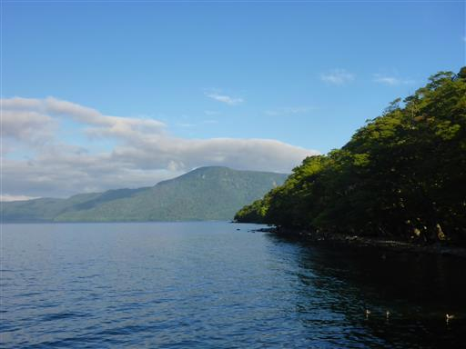
この辺りは子ノ口港だ。
一般的に港周辺は水が汚いことが多いのに、ここでは湖底が少し見えている。
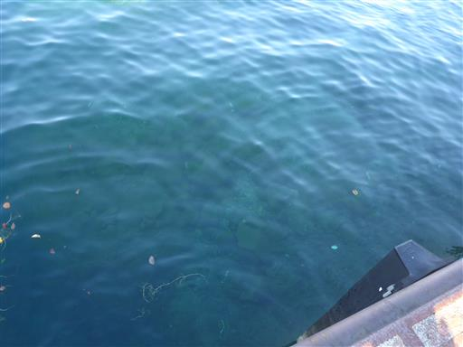
本日は八甲田山に登る予定だった。
しかし、十和田湖周辺は晴れていたのに八甲田山は厚い雲に覆われている。
しかも息子は本日も車酔いで吐いてしまい、山に登るのは困難になってしまった。
明日も晴れ予報のため、八甲田山は明日に回して本日は観光をすることにする。
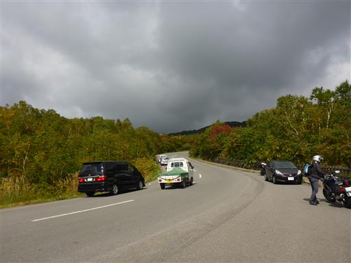
行先を検討し、本日は蔦七沼巡りをすることにする。
ただ、せっかくロープウェイ乗り場まで来たので、近くの城ヶ倉大橋に寄り道する。
アーチ支間長が255mで日本一の長さらしい。
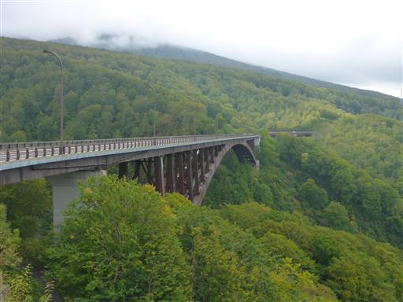
橋から谷底までの高さは122mで凄まじい高度感だ。
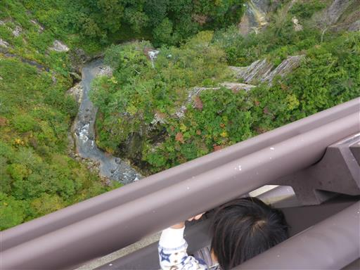
柱状節理の断崖に囲まれたＶ字型の峡谷は迫力がある。
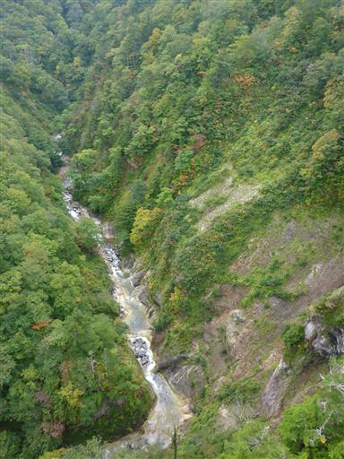
次は地獄沼に立ち寄る。
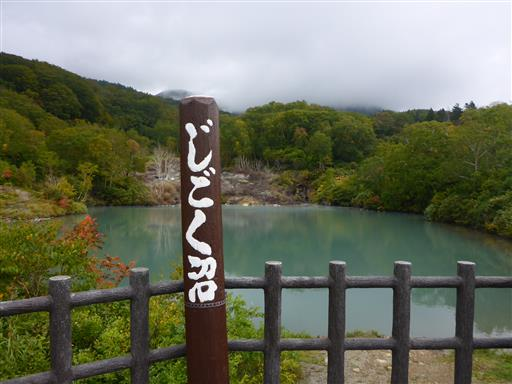
沼の畔に下りる。ここは爆裂火口跡に、湧き出る温泉がたまってできた沼らしい。
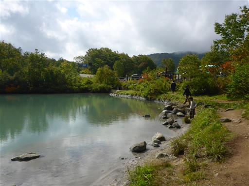
強酸性で不気味な色をした沼だ。
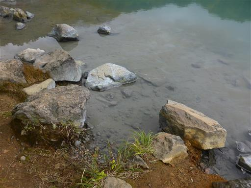
90℃以上の湯が湧き出ているらしく、遠くの方は湯気が出ている。
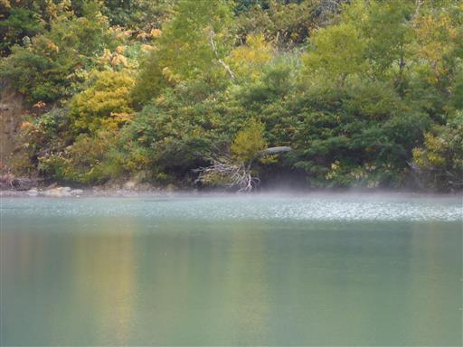
対岸のこちらの方はもう冷めていて水になっている。
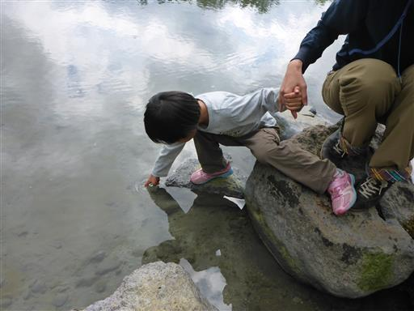
あちらこちらで泡がぷくぷくと出ている。不思議な現象だ。
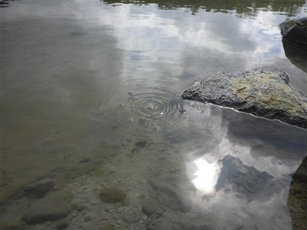
この辺りは紅葉が始まっている。
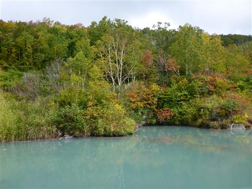
地獄沼の観光を終えたら、蔦七沼に移動する。
この辺りは蔦温泉があり賑わっている。
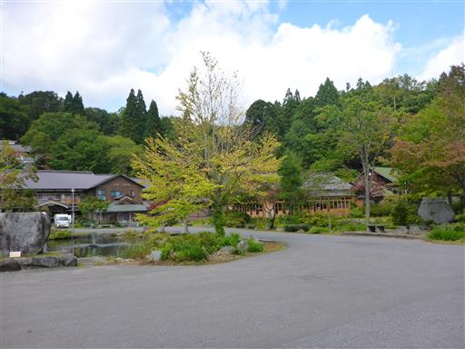
沼を巡る遊歩道はきちんと整備されている。
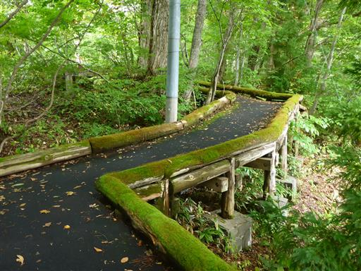
道端の川。柵が無いので、息子を歩かせると落ちそうで怖い。
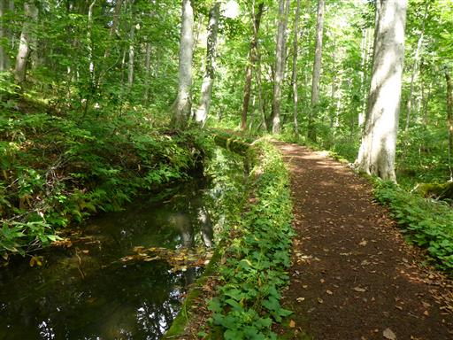
流れはほとんどないが、きれいな水だ。
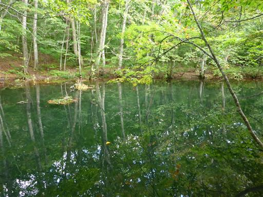
蔦沼に続く木道を進んで行く。
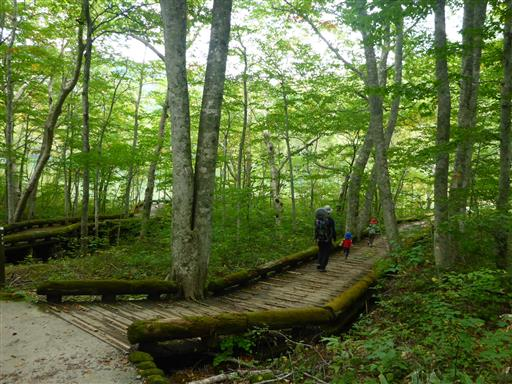
蔦沼に到着。結構大きめの沼だ。
背後には南八甲田の赤倉岳が見えている。
娘がグズっているため、ここで昼食をとることにする。
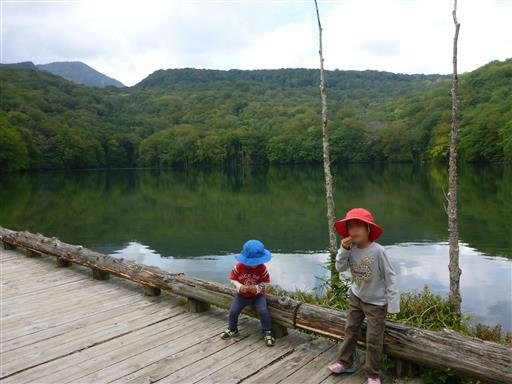
木が生えているところに、穴が開けられている。
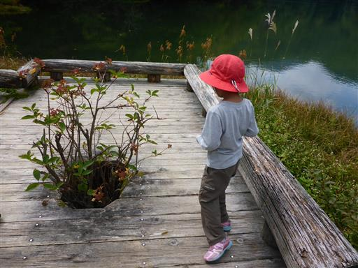
この辺りは立派なブナの木が多い。
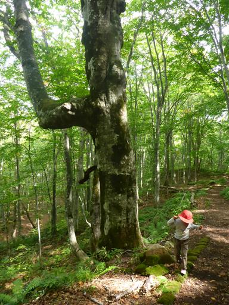
沼巡りと言ってもそれなりに登りがある。
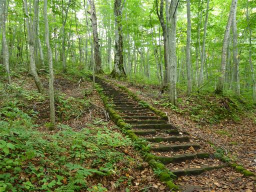
立ち枯れた木には「監視木」と記載されている。
大きな木が倒れてくると結構危険だ。
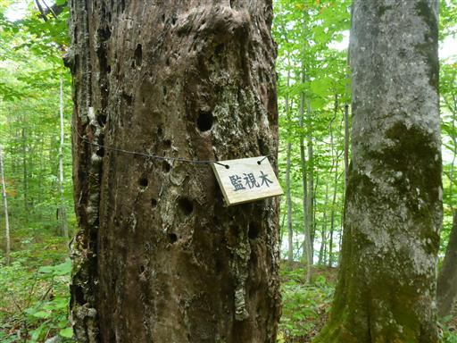
鏡沼に到着。こちらは小さな沼だ。
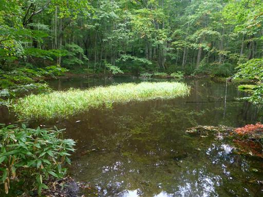
水が2手に分離している。1つの流れは鏡沼に続いている。
解説板によると、鏡沼は人工的に造られた沼らしい。
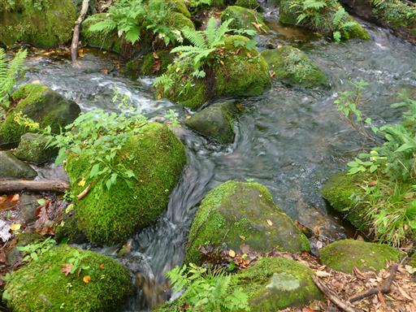
鏡沼の上流にある月沼。辺りは静寂が支配している。
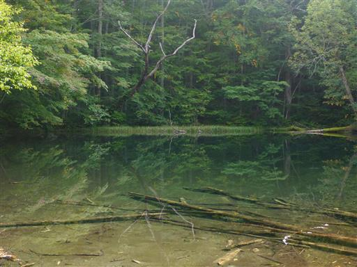
赤沼に続く道。赤沼は蔦七沼の中で1つ離れた場所にあり、
ここからだと荒れた道を2時間ほど歩く必要がある。今回はパスする。
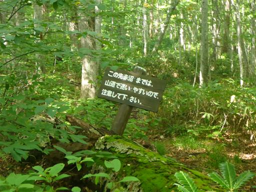
ブナやトチなどが生い茂る緑に覆われた森が広がっている。
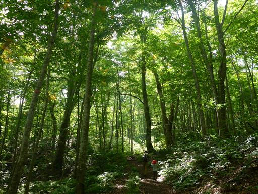
立派な大木。背景は長沼だ。
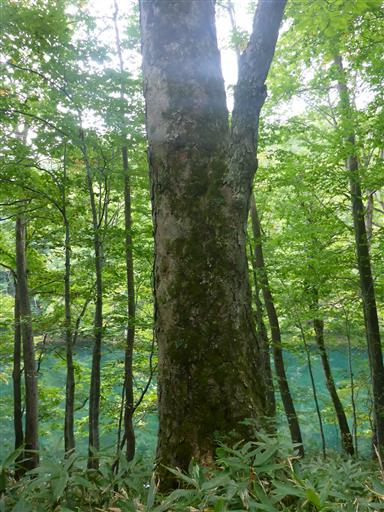
倒木にキノコがたくさん生えている。
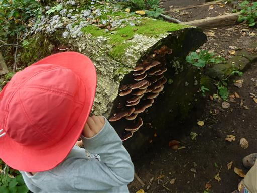
このような小さな木はシラビソ等の幼木だと思っていたが、
側の解説板によるとハイイヌガヤという種らしい。
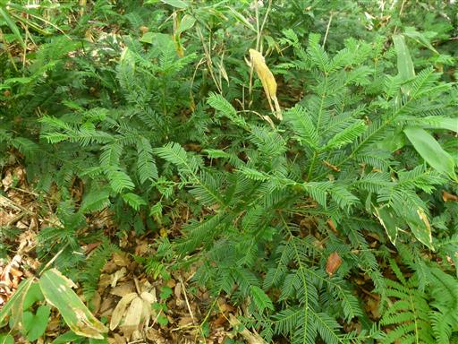
菅沼。水中の倒木が見える。この辺りは水が本当にきれいだ。
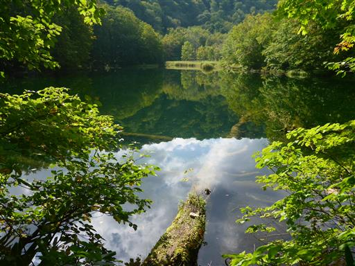
野犬がいるのか？
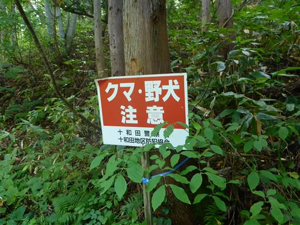
沼巡りを終えたら十和田湖に移動し、瞰湖台という展望台に行ってみる。
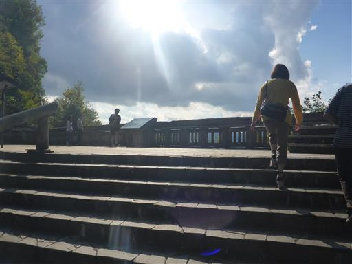
ぐるりと山に囲まれている。十和田湖は日本有数のカルデラ湖だ。
この展望台から見えているのは十和田湖の西半分くらいだ。
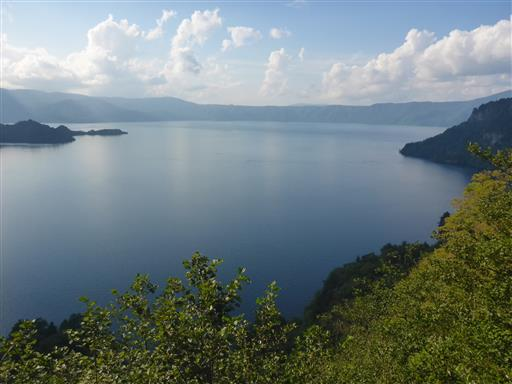
馬鹿でかい柵があって子供は景色が見えない。
娘は器用に手摺に登っている。
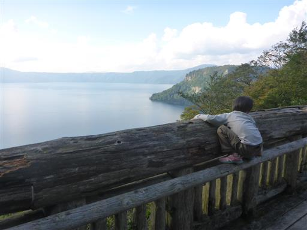
湖上には遊覧船がたくさん見られる。湖の色はきれいな青色だ。
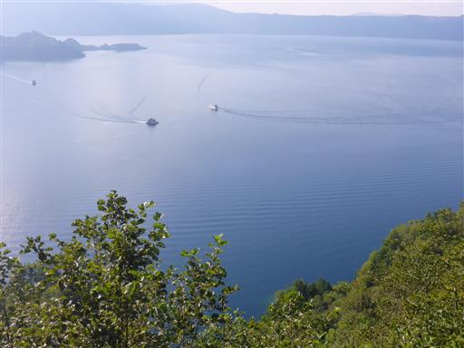
次は十和田湖畔の休屋へ移動。この界隈で一番賑わっている場所だ。
駐車料金は500円で、今回の旅行で初めて駐車料金を取られる。
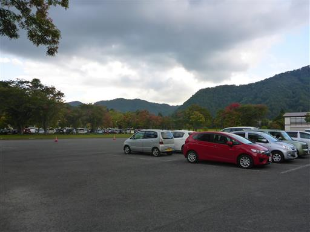
娘はおやつが欲しいと言い続けていて、「湖の畔で食べようね」となだめていたのに、
スワンボートを見た瞬間、おやつのことは忘れて乗りたいと言い出す。
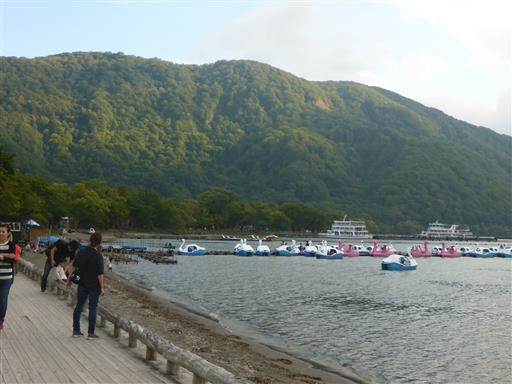
娘をなだめて、まずはおやつを食べてから乗り場に移動。
子供達はダッシュだ。料金は30分1500円とそれなりにする。
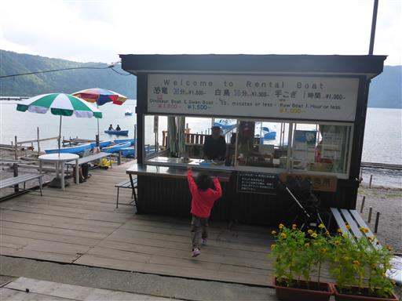
初めてのスワンボート乗船だ。
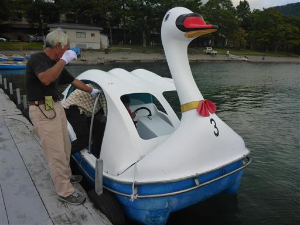
ボートなので水面はすぐ近く。手を伸ばせば水に触れられる。
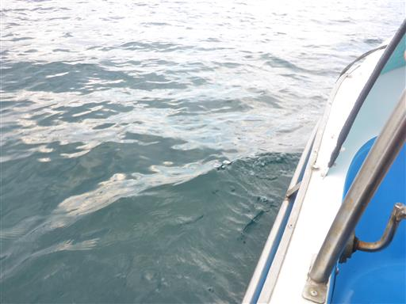
娘も頑張って漕いでいる。ハンドルはあるが案外運転が難しい。
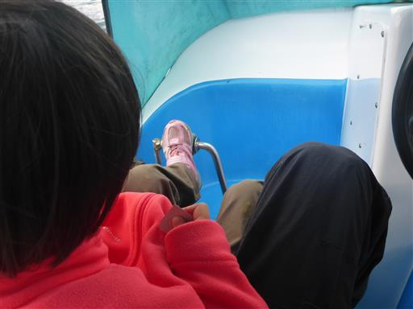
スワンボートを降りたら近くの十和田神社にお参りする。
もう4時過ぎで、木が生い茂った神社への道は真っ暗だ。
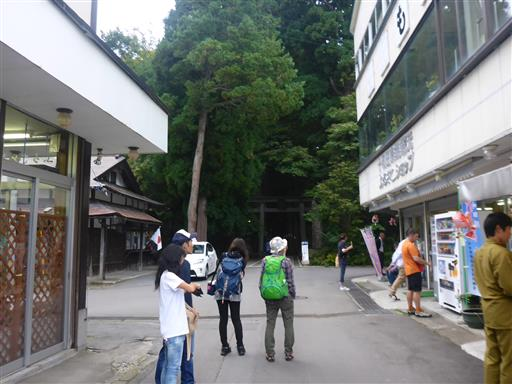
境内は大きな杉が立ち並んでいる。
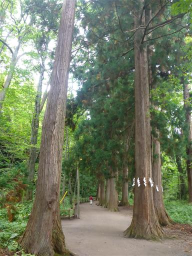
神社に到着。ここで交通安全のお守りを買う。1年半振りの更新だ。
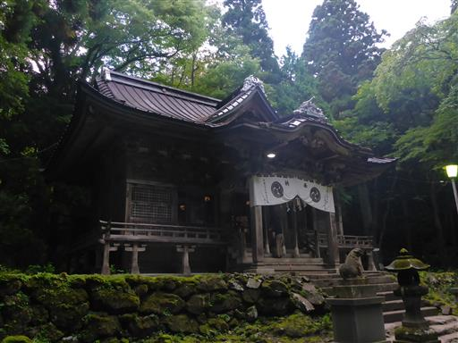
乙女の像に移動。いかつい女性の裸像だ。高村光太郎作。
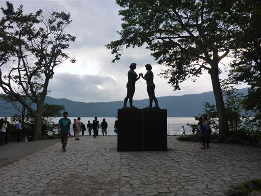
遊覧船がやってきた。案外狭い場所でも入れるものだ。
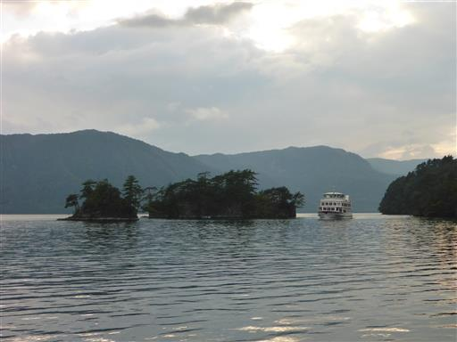
乙女の像から続く御前ヶ浜で少し遊んでから宿に戻る。
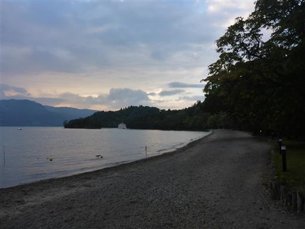
子供達は夕飯時に他のお客さんの子供と仲良くなって、クワガタを捕まえて遊んでいた。
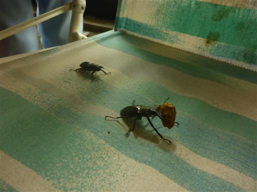